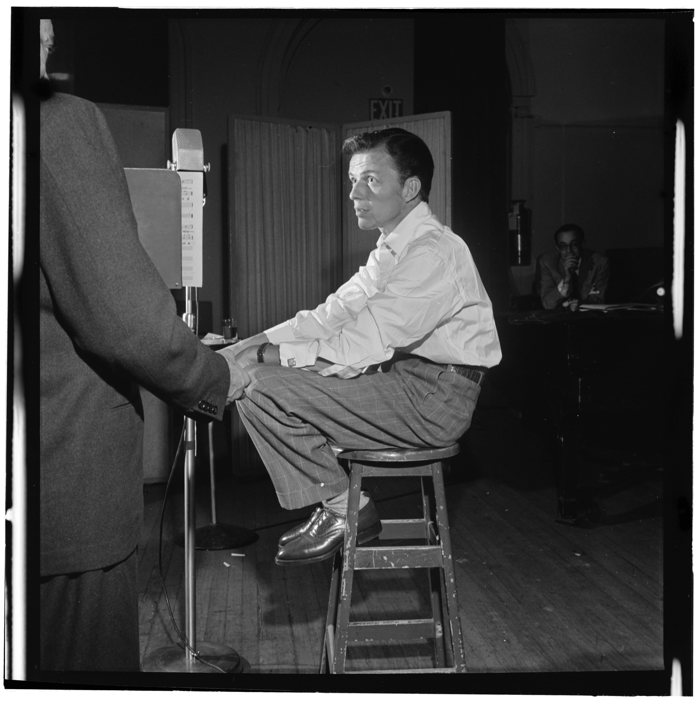
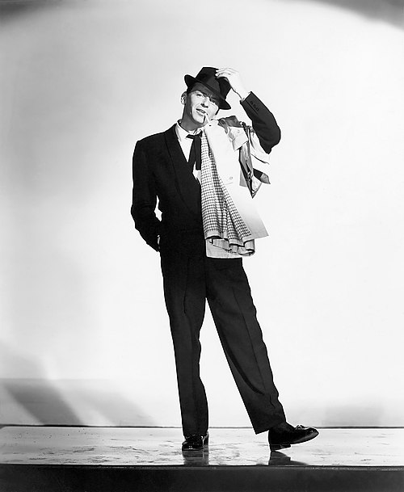
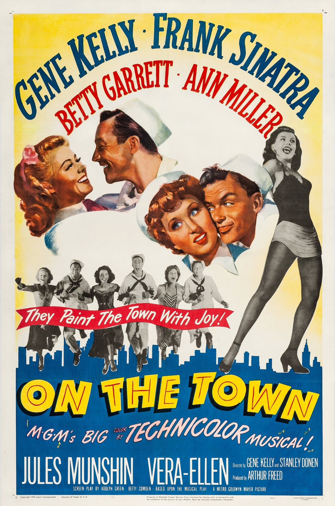

Frank Sinatra
Klemensas Kaubrys 10B

Ankstyvas gyvenimas

Frank Sinatra gimė 1915 m. gruodžio 12 dieną, Hobokene, Naujajame Džersyje, italų imigrantų šeimoje. Jo šeima gyveno kukliai, o jaunasis Frankas nuo pat vaikystės rodė ypatingą susidomėjimą muzika. Jis dažnai dainuodavo mokyklos renginiuose, vietiniuose klubuose ir radijo laidose. Jo balsas ir charizma padėjo jam greitai tapti pastebėtam muzikos pasaulyje.
Karjera ir šlovė

Sinatra tapo viena didžiausių XX amžiaus žvaigždžių, atlikdamas tokius hitus kaip „My Way“, „Strangers in the Night“ ir „Fly Me to the Moon“. Jo dainos tapo klasika, o pats Sinatra – populiariosios muzikos ikona. Be muzikos, Sinatra taip pat turėjo sėkmingą aktoriaus karjerą, už vaidmenį filme „From Here to Eternity“ (1953) buvo apdovanotas „Oskaru“.
Palikimas ir asmeninis gyvenimas

Sinatra buvo charizmatiška ir kontraversiška asmenybė. Jis buvo vedęs keturis kartus, tarp jo žmonų – garsios aktorės Ava Gardner ir Mia Farrow. Frank Sinatra mirė 1998 m. gegužės 14 dieną Kalifornijoje, palikdamas didžiulę įtaką muzikai ir populiariajai kultūrai. Jo muzika iki šių dienų populiari visame pasaulyje ir įkvepia naujas kartas atlikėjų.